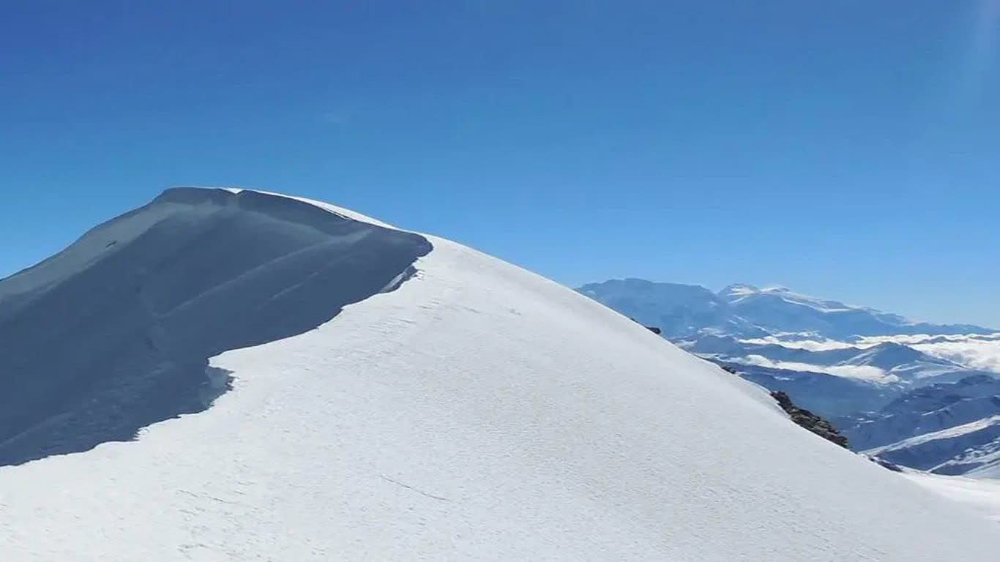
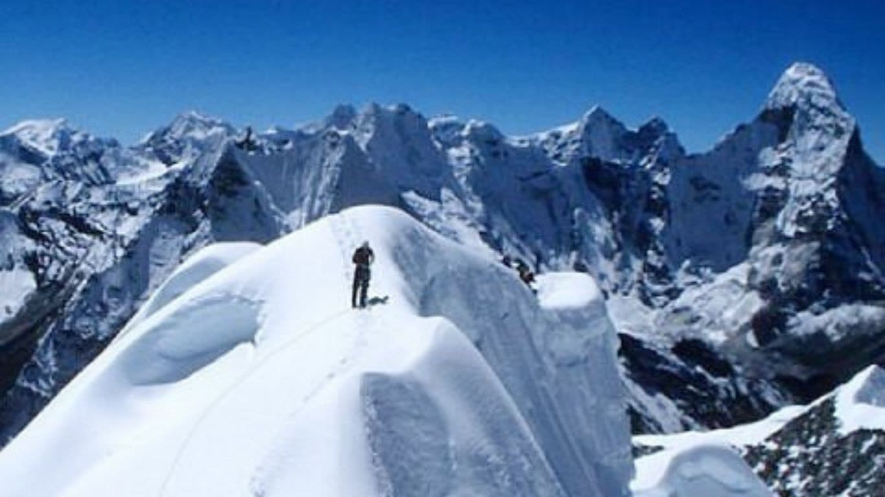
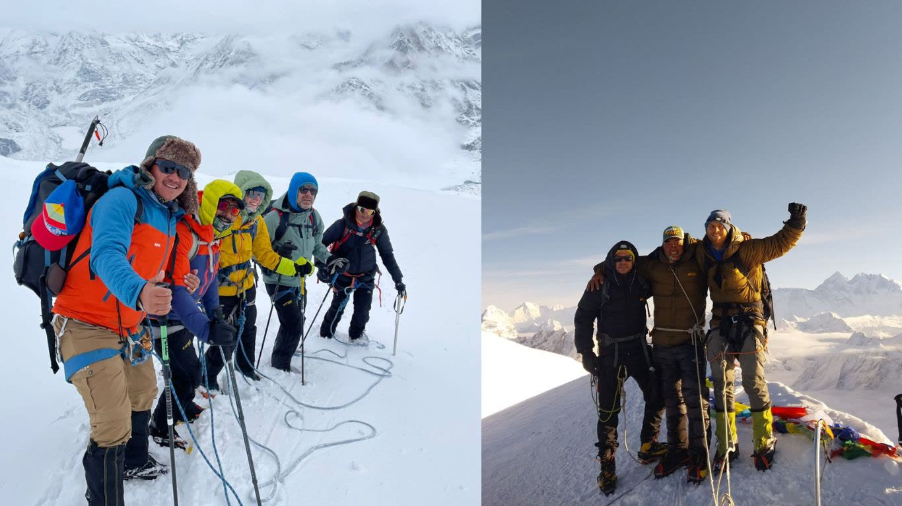
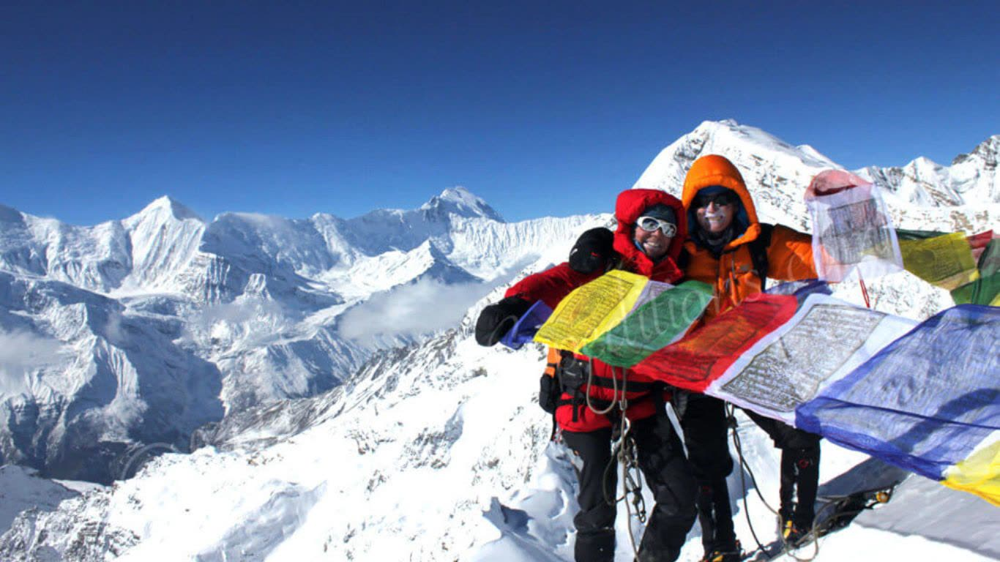
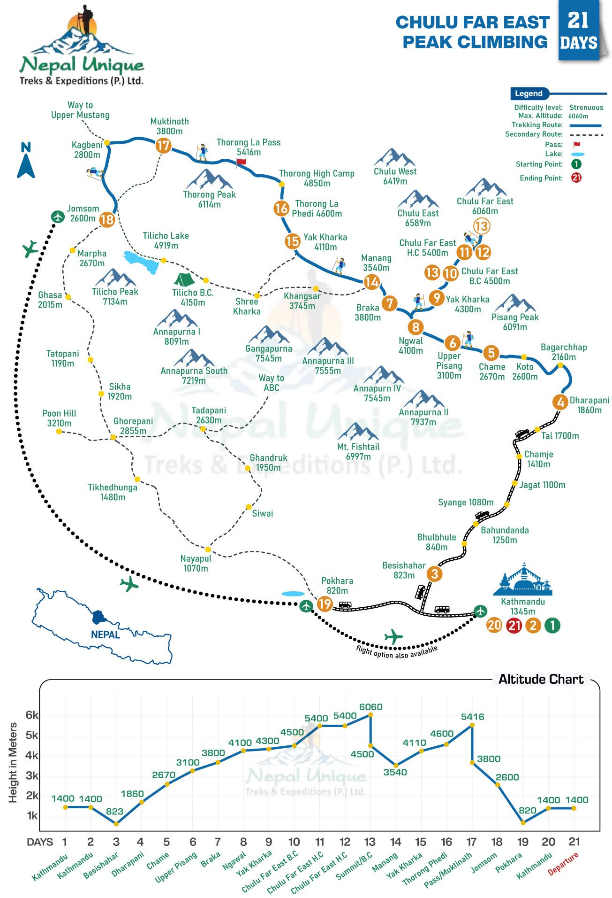

Chulu Far East Peak Climbing
Chulu Far East Peak Climbing is an adventurous ascent that we recommend every peak climbing enthusiast go for in 2026. This expedition offers a captivating blend of challenging ascent, cultural immersion, and alpine wonder.





Key Trip Facts
Trek Overview
Trip Highlights
Introduction Chulu Far East Peak Climbing
Chulu Far East Peak Climbing is an exciting Himalayan climbing adventure in Nepal that combines the famous Annapurna Circuit with the ascent of Chulu Far East Peak. The expedition takes climbers through diverse landscapes, traditional mountain villages and high-altitude terrain before reaching the climbing route and summit. This adventure is suitable for experienced trekkers and climbers looking to combine trekking and peak climbing in the Annapurna region.
Chulu Far East Peak Climbing Overview
Chulu Far East Peak Climbing is an adventurous ascent that we recommend every peak climbing enthusiast go for in 2026. This expedition offers a captivating blend of challenging ascent, cultural immersion, and alpine wonder. Besides, the Chulu Far East Peak stands tall at an altitude of 6,059 meters above sea level. Furthermore, this non-technical summit in the heart of the Annapurna region is surrounded by stunning views of Annapurna II, III, IV, Gangapurna, and Dhaulagiri.
The Nepal Unique Treks & Expeditions team has thoughtfully designed this 20-Day Chulu Far East Peak Climbing package to ensure gradual acclimatisation and physical readiness. The journey begins as you reach Kathmandu and have a leisure day with a preparation period. After that, we drive off to Chame and then begin the walking journey towards the Eastern peak of Chulu. Along the way, the trail also treats trekkers with a rich cultural mosaic of Tibetan-influenced communities, terraced farmlands, and high-altitude wilderness.
Besides, this peak climbing trail also passes through several remote and traditional villages, including Pisang, Humde, Julu Khola, and up to the Chulu Far East Base Camp. The Chulu Far East Peak Climbing trail demands proper physical and mental readiness, but does not require prior peak climbing experience. However, booking the package with Nepal Unique Treks & Expeditions offers you a chance to go on a climb led by professional guides. Furthermore, we also arrange a dedicated acclimatization schedule and basic mountaineering training to keep you going throughout the journey.
The Chulu Far East Peak Climbing package is ideal for anyone looking to go beyond trekking and wants to experience a true Himalayan summit. Other than being a peak climbing journey, this is also an experience of a lifetime and a chance to delve deep into the culture, lifestyle, and tradition of the Annapurna region of Nepal.
Why Choose Nepal Unique Treks & Expeditions for Peak Climbing in Nepal?
Nepal Unique Treks & Expeditions stands as a trusted name for safe, well-organized, and outstanding trekking packages in Nepal. Whether you look for a trekking journey or a peak climbing journey in Nepal, you can simply choose us. Furthermore, here are a lot more advantages of booking Nepal Unique Treks & Expeditions for the Chulu Far East Peak Climbing journey:
We possess more than two decades of organizing successful Himalayan expeditions, treks, and peak climbing packages.
With Nepal Unique Treks & Expeditions, you can expect the peak climbing journey to be led by trekking and mountaineering guides with over a decade of experience. Besides, they also possess fluent spoken English to assist you in interacting with the locals.
We make sure that the itineraries are well crafted with proper distribution of acclimatization or rest days.
Our professional Sherpa guides also provide the climbers with mountaineering training along with training to use all the mountaineering gear like crampons, ice axes, ropes, etc.
Our team also provides pickup and dropoff facilities to the climbers while receiving them from the Airport and again dropping them off at the airport at the end of the package.
The Nepal Unique Treks & Expeditions team ensures to arrange healthy and hygienic food and accommodation throughout the Chulu Peak East Climbing journey.
Our team of expert and seasoned guides and tour operators also possesses strong knowledge about local traditions, culture, and lifestyle.
Chulu Far East Peak Climbing Permit Requirements
For the Chulu Far East Peak Climbing journey, the climbers need to obtain 3 different permits and passes. These permits will be checked at different checkposts throughout the route, and without these permits, climbers will not be permitted to go beyond the checkposts. Here are the permits that we need for the Chulu Far East Peak Climbing package:
Annapurna Conservation Area Permit: As the climbing route passes through the Annapurna Conservation Area, trekkers need this permit to enter this area.
Trekkers' Information Management System: This card is issued by the trekking authorities of Nepal to ensure the safety tracking of all the climbers and trekkers even in remote locations.
Climbing Permit for Chulu Far East Peak: Issued by the Nepal Mountaineering Association, as Chulu East is a group 'B' trekking peak.
While the cost of the two other permits remains the same for every season, the cost of the Climbing Permit varies based on the season you choose.
Cost for Chulu Far East Peak Climbing in 2026 and 2027
The cost for the Chulu Far East Peak Climbing package varies depending on the number of climbers in your group. Besides, the seasons that you choose can also cause a significant change in the cost of this peak trekking journey. However, the Nepal Unique Treks & Expeditions team ensures to provide all the trekkers and peak climbers with the most affordable and reasonable cost for the Chulu Far East Peak Climbing in 2026 and 2027 Nevertheless, to know about the price in detail, you can scan the table below:
Chulu Far East Peak Climbing Itinerary: Day by Day
21 Days program for Chulu Far East Peak Climbing. Daily timings and sequences remain flexible according to weather, flight operations, and group pace.
Day 1: Arrival in Kathmandu and Transfer to the Hotel (1,300m)
Approx. 1,345 m / 4,413 ft
The local representatives from Nepal Unique Treks will receive you and drive you to the hotel as you land in Kathmandu. You will again be welcomed in the hotel with a refreshing drink before you check into your room. Offer yourself some time to freshen up and rest. After that, we recommend that the trekkers stroll around the vibrant streets of Thamel, or you can also keep resting in the hotel itself.
Day 2: Sightseeing tour of Kathmandu and Climbing Gear Preparation Day
Approx. 1,345 m / 4,413 ft
As you wake up and have breakfast in the hotel, our guides will take you on an insightful Kathmandu day tour. Today, we will explore different UNESCO World Heritage Sites in Kathmandu, including the Pashupatinath Temple, Swoyambhunath Stupa, Bouddhanath Stupa, and a couple of durbar squares. While roaming around the city, you can also try several local cuisines and food items while immersing in the unique religious and traditional practices. In the evening, you will return to the hotel, where you will meet your guides for the Chulu Far East Peak Climbing journey. The guides will provide you with detailed information regarding the entire peak climbing map. After that, the Nepal Unique Treks arranges dinner and overnight stay in the same hotel where you stayed the previous day.
Day 3: Drive from Kathmandu to Besisahar (823m), 8 hours
Approx. 823 m / 2,700 ft
Today marks the beginning of the journey towards the Annapurna Region, which starts with a drive from Kathmandu to Besisahar. The drive covers an approximate distance of 175 kilometers, which takes about 8 hours to complete. The journey goes through lush hills, charming villages, and rugged mountain roads, offering glimpses of terraced farms, waterfalls, and snow-capped peaks. In a few hours' time, you can see that the lifestyle and the overall surroundings significantly change from bustling urban towns to a peaceful town area. Besisahar, also known as the gateway to the Annapurna region, sits at an altitude of 823 meters above sea level. Moreover, this village is also considered to be a place where trekkers first feel the Himalayas. As you reach this village, you can notice that the tar road coming from Kathmandu gives way to rocky trails and suspension bridges. Overnight stay and dinner will be arranged in a cozy and comfortable hotel or lodge in Besisahar.
Day 4: Drive from Besisahar to Dharapani (1,860m), 6 hours
Approx. 1,860 m / 6,102 ft
Another day to spend with a drive, and this time, it goes from Besisahar to Dharapani. After a delicious and fulfilling breakfast, we begin a journey with a bumpy but scenic off-road drive that takes us deeper into the rugged heart of the Annapurna region. Besides, the trail also goes along the Marsyangdi River, through narrow gorges, lush hillsides, and traditional villages. Furthermore, the trekkers will also pass through cascading waterfalls, terraced farms, and the occasional mule caravan trudging up the steep, dusty paths. Within the next 6 hours, we will finally reach the final checkpoint for today's Chulu Far East Peak Climbing journey. As you reach here, you can notice a distinct shift in the landscape and architecture, stone-built homes, fluttering prayer flags, and crisp mountain air. With all these, Dharapani also offers a unique blend of Nepali and Tibetan-influenced cultures of the Manang region. This bustling village, situated at the confluence of the Annapurna and Manaslu trekking routes, is also the first official checkpoint for permits. Dinner and overnight stay will be arranged by Nepal Unique Treks in Pisang.
Day 5: Trek from Dharapani to Chame (2,670m), 5 - 6 hours
Approx. 2,670 m / 8,760 ft
After breakfast, we begin our first walking trail in the Chulu Far East Peak Climbing map, which takes us from Dharapani to Chame. The trail begins with a gradual ascent along a forested path where pine, fir, and oak trees shade the route. On the walk, we also pass through small settlements like Bagarchhap and Danaque, enjoying glimpses into the daily lives of the local Gurung and Tibetan-influenced communities. Furthermore, you can expect eye-soothing views of Annapurna II while passing through stunning waterfalls, narrow canyons, and peaceful woods. As you approach Chame, the administrative centre of Manang District, you will see a charming mountain town nestled against a backdrop of towering peaks. This village also consists of much developed infrastructure, where you can enjoy the local bakeries as well. Besides, dramatic cliff walls and pine forests surround the entire village while offering exceptional views of Lamjung village. Check in at the hotel to rest and get freshened up before strolling around the village.
Day 6: Trek from Chame to Upper Pisang (3,100m), 5 hours
Approx. 3,100 m / 10,171 ft
Leaving Chame behind, the trail ascends gradually through dense pine forests, which we undertake after a delicious breakfast. On this section of the Chulu Far East Peak Climb, the trekkers pass through traditional villages and landslide-prone cliffs. Also, do you know what? Every twist and turn in this section of the trail reveals a different perspective or views of snow-capped peaks like Annapurna II and Pisang Peak. As we will be over 3000 meters, there will certainly be a slight change in the amount of oxygen in the air. Yes, you can sense the oxygen level decreasing significantly. At Upper Pisang, the village above the valley, you can expect some panoramic views along with settlements highly influenced by tradition and culture. Besides, the trekkers also get to see stone houses, fluttering prayer flags, and a beautifully preserved monastery in this village. All these make Upper Pisang a perfect place to explore and spend a night before ascending further on the Chulu Far East Peak route.
Day 7: Trek from Upper Pisang to Braka (3,800m), 5 hours
Approx. 3,800 m / 12,467 ft
After having a fulfilling breakfast in Upper Pisang, we have another adventurous section to cover in the Chulu Far East Peak Climbing trail. This day's trail is famous for its incredible Himalayan panoramas and cultural immersion. A we leave Upper Pisang, we need to climb gradually through dry alpine terrain, passing through some settlements. Also, do you know what makes this day special? The views of Annapurna II, III, IV, and Gangapurna become more dramatic and come closer to you. This portion of the trek is challenging due to the gain in altitude, but incredibly rewarding with its quiet trails and hillsides with monasteries. Within the next 5 hours of leaving Upper Pisang, you finally step into Braka or Braga, a village at an altitude of 3,800 meters above sea level. This Himalayan settlement also stands as a popular stop for enjoying incredible Himalayan panoramas. Besides, you can immerse yourself in the culture and tradition while in the oldest village of the Manang region. Take your time to explore the village before dinner and overnight stay.
Day 8: Ascend from Braka to Ngwal (4,100m), 4 hours
Approx. 4,100 m / 13,451 ft
As usual, we start the walk on another section of the Chulu Far East Peak ascending trail after having a delicious breakfast in the hotel. Breaking away from the main Annapurna Circuit Trek, we turn towards a less trodden, high-altitude trail that offers raw wilderness and dramatic rock formations. Besides, the spectacular views of the Himalayas and valleys make this walk even more dramatic and interesting. One thing that the climbers should keep in mind is that this route is more remote and rugged, adding a layer of solitude and adventure that seasoned trekkers crave. Reaching Ngwal means stepping into a traditional Tibetan-style village sitting at an altitude of 4,100 meters above sea level. Besides, the prayer flags, chortens, and the murmuring of chants from the nearby gompa make this place an epitome of peace and religion. Take your time to interact with the locals and get insights from the guides to delve deeper into the history and lifestyle of this village. Overnight stay and dinner will be arranged by Nepal Unique Treks & Expeditions in a comfortable and hygienic lodge.
Day 9: Trek from Ngwal to Yak Kharka (4,300m), 4 hours
Approx. 4,300 m / 14,108 ft
Just like the previous, we again go for a short yet adventurous and unveiling trek om the ninth day as well. Leaving behind the spiritual calm of Ngwal, the trail meanders through high-altitude pastures and rocky outcrops. Furthermore, this day's trail also brings you closer to landscapes with sparse trees and shrubs, meaning closer to the alpine landscapes. Watching the open panoramas of the Annapurna range, distant glaciers, and yaks grazing freely across the hills, we make our way towards Yak Kharka. Yak Kharka, meaning Yak Pasture, is an open meadow at 4,300 meters and is often referred to as a peaceful, pristine, and perfect point for acclimatization. Here, you will meet many other trekkers and climbers making their way to the Chulu Far East Summit. Besides, the village is surrounded by snow-dusted ridges and the distant roar of glacial rivers. We will have dinner and spend a night here before ascending further on the Chulu far East Peak Climbing trail.
Day 10: Trek from Yak Kharka to Chulu Far East Base Camp (4,500m) – 3-4 hours
Approx. 4,500 m / 14,764 ft
The tenth day in the Chulu Far East Peak Summit trail stands as one of the highly anticipated and exciting days in the Chulu Far East Peak Climbing journey. This short trail leads us deep into alpine wilderness as we climb steadily through glacial streams, scattered boulders, and rugged ridgelines. With each step, the isolation grows, and the sense of adventure deepens along with the dramatic vistas of the Annapurna and Gangapurna massifs. As we reach the Chulu Far East Base Camp, a snowy area with the whisper of the wind and the occasional crack of shifting ice, welcomes you heartily. After that, you can spend some quality time settling in, soaking up the views, and beginning to mentally prepare forthe Chulu Far East Peak Climb ahead.
Day 11: Ascend from Base Camp to Chulu Far East High Camp (5,400m), 4 hours
Approx. 5,400 m / 17,717 ft
The eleventh day marks official entry into high alpine territory, where the air is thinner, the winds are sharper, and the mountains feel the closest. It only takes about 4 hours for us to ascend from Chulu Base Camp to High Camp, ascending to an altitude of 5,400 meters above sea level. However, we need to go on a steep and thrilling ascent across scree slopes, icy patches, and jagged moraines. Moreover, every step in this section of the Chulu Far East Peak Climbing map requires more and more effort and adrenaline boost. The Chulu High Camp, located at an altitude of 4500 meters above sea level, offers something extraordinary. Just imagine the feeling you get knowing that you are just one day away from standing on the Chulu Far East Peak. An amazing feeling, right? Well, the high camp itself is nestled beneath towering ridgelines, offering front-row views of Chulu’s icy flanks and the distant spires of the Annapurna range. Furthermore, this spot also serves as the perfect place to rest for a day before summiting the Chulu East Peak (6,059 meters).
Day 12: Extra Day for Rest and Acclimatization
Approx. 5,400 m / 17,717 ft
Before we make the final ascent to the summit, the Nepal Unique Treks & Expeditions team ensures that all the climbers are perfectly ready. For the last time, your climbing gear are checked, your physical abilities are checked, and we also determine whether you are mentally ready for the final walk. The climbers can spend the entire day resting and preparing themselves for the final ascent to the Chulu Far East Peak. Dinner and overnight stay will be arranged by Nepal Unique Treks & Expeditions in a camp set by the Sherpa guides.
Day 13: Summit to Chulu East pea 6060m, Return to Base Camp 4500
Approx. 4,500 m / 14,764 ft
After so many days of walking on the route, it's finally the day to summit the Chulu Far East Peak. We begin the ascent early in the morning, even before sunrise, so using a headlamp to navigate the path is highly recommended. Remember that this final stretch of the Chulu Far East Peak Climbing trail tests both your stamina and spirit. Moreover, the climb also demands technical awareness, mental resilience, and steady pacing, so be mentally and physically prepared. Ascending some steep snow slopes, navigating icy ridgelines, and carefully following the guidance of the Sherpa leader, we make our way to the top of the Chulu Far East Summit. As you reach the top, you will be speechless, emotionless, and star-struck by the views you see. However, as you regain your sanity, a sweeping 360° view of the Annapurna range, Dhaulagiri, Tilicho Peak, Manaslu, and even as far as Tibet on a clear day awaits you to watch. Take your time to watch the scenes and capture as many photos and videos as possible before we descend back to the Base Camp. While returning, we recommend the climbers to be extra cautious because the trail will be snowy and require careful footing. As you reach the Base Camp, take your time to celebrate the achievement before descending any further.
Day 14: Trek from Chulu Base Camp to Manang (3,540m), 7 hours
Approx. 3,540 m / 11,614 ft
After such a thrilling, adventurous, and memorable ascent to the Chulu Far East Summit, it's time for us to return. On that verge, we make our way to Manang, one of the most beautiful Himalayan villages, on the fourteenth day. Slowly and gradually, we retrace our steps through alpine wilderness and descend to earthy, rugged trails surrounded by sky-touching cliffs. Also, you can expect the air to thicken slightly as you descend on this section of the Chulu Far East Peak Climbing trail. Furthermore, you will also return to the classic Annapurna Circuit route. Arriving in Manang is like returning to a mountain haven. Nestled in a sweeping valley and surrounded by the towering Annapurna massif, this picturesque Himalayan village offers modern comforts blended with timeless Tibetan culture. This beautiful and picturesque village offers warm hospitality, many options in food and accommodation, and outstanding views of Gangapurna and Annapurna III. Take your time to relax, stroll around, interact with the locals, and get deeper insights into the culture, tradition, and lifestyle of the village.
Day 15: Ascend from Manang to Yak Kharka (4,350m), 4 hours
Approx. 4,350 m / 14,272 ft
After a much-needed rest in Manang, you will wake up, get freshened, and have breakfast before walking off another section of the Chulu Far East Summit trail. This day's trail leads you higher into the alpine wilderness as you ascend toward Yak Kharka. Not much to walk but certainly, a lot to experience and witness, that's how the route from Manang to Yak Kharka goes. As you start your journey, you can notice trees becoming sparse, the terrain growing more rugged, and the mountain air turning crisper. Furthermore, the path climbs steadily along the valley, passing ancient mani walls, scattered yak pastures, and the occasional highland hamlet. After a moderately lengthy and steady walk, we finally reach Yak Kharka, a peaceful place perfect for acclimatization before heading out to the Thorong La Pass. Here, they can expect rustic stone lodges, tranquil surroundings, and clear skies. Therefore, we recommend the climbers to go for a highly required rest.
Day 16: Trek from Yak Kharka to Thorong Phedi (4,420m), 4 hours
Approx. 4,220 m / 13,845 ft
Again, it's a day where we go for a quick and short walk in the Chulu Far East Peak Climbing trail, and it takes us towards Thorong Phedi. As we leave Yak Kharka and begin walking, the trail passes through barren alpine landscapes, with spiky cliffs and snow-dusted ridgelines. Furthermore, the climbers will also cross a suspension bridge over the roaring Marsyangdi River before facing a brief, steep climb to reach Ledar. This is where the narrow path gets more rugged and crosses some landslide-prone areas. After such an adventurous walk for about 4 hours, we finally stepped onto the base of the Thorong La Pass, also known as Thorong Phedi. Situated at an altitude of 4420 meters, Thorong Phedi is a remote outpost nestled at the foot of the Thorong La Pass. Before ascending to Thorong La Pass, the climbers will need to go for a rest to fuel up, and that's what we do at Thorong Phedi. Take your time to prepare yourself both physically and mentally while also relaxing every bit of your muscles.
Day 17: Trek from Thorong Phedi to Muktinath Temple (3,850m) via Thorong La Pass (5,416m), 7 hours
Approx. 3,850 m / 12,631 ft
As you wake up and have breakfast in Thorong Phedi, one of the most adventurous and adrenaline-rushing walks awaits on the Chulu Far East Peak map. The walk begins in the cold, predawn hours, with headlamps lighting the rocky trail. Please remember to keep a slow and steady pace, as we will be over the altitude of 5000 meters above sea level. With every step, we can experience the air getting thinner and the trail demanding every penny of determination from the climbers. As you reach the Thorong La Pass, you will first get an unforgettable panoramic view of Annapurna, Dhaulagiri, and many more mountains. After spending some quality time on the Thorong La Pass and capturing as many photos and videos as you can, we descend steeply down to Muktinath. Considered one of the most sacred and holy sites revered by both Hindus and Buddhists. The landscape shifts dramatically as you leave the icy alpine for drier, more barren terrain. On your way, you can meet many other Nepali and international visitors coming to Muktinath via bus, jeep, and even motorbikes. The Muktinath temple consists of 108 holy water spouts and flickering eternal flames that offer a deeply spiritual end to an epic day.
Day 18: Trek from Muktinath to Jomsom (2,700m), 4 hours
Approx. 2,700 m / 8,858 ft
After so many days of walking in the alpine region of the Annapurna region, we finally go for a serene walk towards Jomsom. As we leave Muktinath and descend into the Kali Gandaki Valley, the trail gently weaves through the barren, windswept Mustang terrain, dotted with centuries-old monasteries and weathered stone houses. Furthermore, you also get chances to pass through the culturally rich village of Jharkot. A little more walking before we reach Kagbeni, an ancient trading outpost guarding the gateway to Upper Mustang. Just wait until you get some majestic views of the Nilgiri and Dhaulagiri Himalayas. After walking for about 4 hours, you will finally reach Jomsom, one of the most happening areas in the Mustang region. Almost every house in this village has a hotel or restaurant. Furthermore, if you want to go for some beverages, Jomsom also offers Marpha, a liquor made of apples. Other than that, we recommend the climbers to go for a much-needed rest in Jomsom before returning to Pokhara and Kathmandu in the upcoming days.
Day 19: Flight from Jomsom to Pokhara (820m), 17 minutes
Approx. 820 m / 2,690 ft
As you wake up and have breakfast in the hotel, the guides from Nepal Unique Treks & Expeditions take you to the Jomsom Airport. From here, you will go for a quick and short flight to Pokhara, watching the bird's eye views of the Kali Gandaki Gorge, one of the deepest in the world. As you lift off from Jomsom’s mountain airstrip, the rugged, arid landscapes of Mustang give way to the lush green hills and serene lakes of Pokhara in under 20 minutes. In Pokhara, the weather, climate, and the entire lifestyle drastically change if compared to those seen in the Chulu Far East Peak ascending trail. The lakeside city welcomes you with tranquil vibes, cosy cafés, and panoramic views of snow-capped giants reflecting off Phewa Lake. So, we recommend that you get the most deserved rest and celebrate the peak climbing success at the lakeside.
Day 20: Drive from Pokhara to Kathmandu
Approx. 1,345 m / 4,413 ft
On day 20, you will be driven from Pokhara to Kathmandu that covering around 201 kilometers. Recently, the roads have been made very smooth and well-pitched. For that reason, it will not take us much to reach Kathmandu, and the drive will also be much easier. As you reach Kathmandu, we drive you straight to the hotel where you can freshen up and get some rest. In the evening, the Nepal Unique Treks team invites you for a farewell dinner, where we also celebrate your successful accomplishment of the Chulu Far East Peak Climbing journey.
Day 21: Return Home
Approx. 1,345 m / 4,413 ft
At last, the 21-Day Chulu Far East Peak Climbing package comes to an end as our representatives drive you to the airport. After that, our representatives bid you farewell as you board the flight and return to your home country. However, we will still strongly believe in meeting you again for another adventurous peak climbing or trekking package in Nepal.
What is Included (Regular Package)
What is Excluded
Booking Dates & Availability
Packing List for Chulu Far East Peak Climbing
Fixed ropes, ice bars, and group climbing hardware are arranged by our Sherpa climbing crew; personal technical gear can be checked in Kathmandu.Technical Mountaineering Hardware (5 items)
Summit Apparel & Protection (4 items)
High-Camp Sleep & Approach (3 items)
Read before you book: Chulu Far East Peak Climbing
Practical logistics derived directly from this package's route facts, inclusions, and elevation profile.
Accommodation & Meals (Hotel, Lodge, Teahouse and Camping)
Accommodation follows the package grade (Hotel, Lodge, Teahouse and Camping) in Kathmandu and along the Peak Climbing route. Check your package Includes section for included meals and Kathmandu hotel nights.
Permits & Local Logistics
Transportation is arranged via Car, Van Bus. Applicable permits listed in the package inclusions are arranged by Nepal Unique Treks prior to departure.
Route Difficulty & Elevation (6,059 meters)
Chulu Far East Peak Climbing is rated adventure with a maximum elevation of 6,059 meters. Follow your guide's pacing and stay hydrated throughout the 21 Days itinerary.
Best Time to Visit (Autumn ( Sep to Dec ), Spring (March to May))
Recommended operating season on the source page: Autumn ( Sep to Dec ), Spring (March to May). Additional official notes from the source page follow below.
Traveller Useful Information
The best seasons for the Chulu Far East Peak Climbing are Spring (March to May) and Autumn (September to November). During these periods or seasons, the climbers can expect stable weather, clear skies, and optimal climbing conditions throughout the journey. These favorable conditions also make climbing much convenient and easy while offering access to many tea houses and guesthouses throughout the Chulu Far East Peak Climbing map.
Other than that, the spring season also brings rhododendron blossoms, moderate temperature, and the daylight stays for a longer period. Therefore, we will walk with the amazing scenario, outstanding views of other mountains, and of course, we can also walk for a little longer than average to reach the checkpoint every day.
Almost the same goes for monsoon as well because the trails remain dry and views stay clear during this season. One of the best things about autumn is that it offers a different kind of freshness caused by the monsoon season. You can expect much greenery, stable weather, snowfall only at higher altitudes, and access to tea houses for proper accommodation and food.
Other Seasons: What are the Conditions?
Winter (December to February): Not highly recommended as the weather remains too cold with heavy snow and harsh winds at higher elevations. Besides, most of the tea houses remain closed due to the extremes in temperature.
Monsoon (June to August): In this season, the trail remains muddy and slippery due to excessive rainfall. Moreover, the visibility also remains poor, which means you might not get the expected views of the mountains and scenery.
Chulu Far East Peak Climbing is considered to be a moderately difficult peak climb in Nepal. For this reason, this peak climbing journey is best suitable for climbers with prior high-altitude trekking or basic mountaineering. Even though this is a trekking peak and not as technically demanding as several other peak climbing journeys, certain sections of the trail include glacier travel, steep ascents, use of fixed ropes, and potentially harsh alpine weather conditions.
Besides, several other factors can make the Chulu Far East Peak Climbing a difficult journey for some, and they are:
This trail takes us all the way to an altitude of 6,059 meters above sea level. Ascending to such a high altitude certainly isn't an easy task.
The Chulu Far East Peak Climbing trail is a mixture of rocky trails, icy slopes, and crevassed glacier sectionsmaking it difficult to navigate and walk.
Trekkers must know the basic technicalities of the mountaineering gear. So, for anyone with no knowledge regarding this equipment, this trail is very difficult.
The trail also demands outstanding endurance and cardiovascular fitness. This is because we need to walk for so many hours every day.
Finally, the weather conditions, temperature, winds, and sudden weather changes can also become another agent for difficulties during the Chulu Far East Peak Climbing.
With a trail ascending to 6059 meters above sea level, the Chulu Far East Peak Climbing package might not be suitable for everyone. So, we only recommend that you go for this Himalayan adventure if you are:
An experienced trekker with prior experience of ascending above 4,500 meters.
Someone who knows basic mountaineering skills and how to use the mountaineering gear and equipment. Basic skills will be enough, as our Sherpa guides also provide training before the summit climb.
can walk for about 6 to 9 hours every day and have outstanding physical and mental fitness.
Do not have any serious issues like problems related to the heart, asthma, etc.
Food and Accommodation during the Chulu Far East Peak Climbing journey provide a mixture of tea houses with a basic expedition setup. In the lower regions, like Chame, Pisang, and Manang, you can expect a wide variety of food, both Nepali cuisine and International options. Besides, these villages also consist of tea houses and lodges with simple but cozy rooms. In almost every hotel or lodge, you can expect twin beds and even attached toilets. Moreover, these tea houses and lodges also offer other facilities like WiFi, internet, electricity, and hot water for showers.
Talking about the meals, Nepal Unique Treks & Expeditions' package includes three meals per day (breakfast, lunch, and dinner). Almost all the tea houses and lodges offer hearty and fulfilling menus, including local Nepali dal bhat (rice, lentils, vegetables), Tibetan bread, soups, pasta, noodles, and omelettes. There might be a little limitation in the food options in higher altitudes once you cross Julu Khola. Besides, you can also buy some other food items, snacks, and drinks from the local tea houses or shops.
As a whole, the entire Chulu Far East Peak Climbing trail offers a wide range of food and accommodation to the trekkers and climbers.
During the Chulu Far East Peak climbing journey, most of the transportation is done via tourist bus or shared jeep. In most cases, the type of vehicle used depends on the number of people in the group. However, regardless of the type of vehicle we arrange, Nepal Unique Treks & Expeditions ensures safety and comfort for the climbers. It takes about 9 to 10 hours for us to reach Chame from Kathmandu to Chame, the starting point of the Chulu Far East Peak Climbing trail.
While returning from the journey, we take a short and quick flight from Jomsom to Pokhara, which takes only 25 minutes. Finally, we bring an end to the Chulu Far East Peak Climbing package with a drive from Pokhara to Kathmandu, covering a total distance of 200 kilometers. This combination of shared jeeps, trekking, and domestic flights ensures both adventure and convenience as you transition from bustling cities to high Himalayan wilderness.
Being a high-altitude peak trekking journey, the Chulu East Peak Climbing journey requires the climbers to train well and prepare properly. Proper planning and training can ensure a safe and successful summit experience while also providing climbers with an adventure of a lifetime.
Let us take you through the preparation and training steps that every climber should do for the Chulu Far East Peak Climbing journey:
Focus on running, cycling, hiking, or swimming and other cardiovascular and endurance training for at least 4 to 5 days a week.
Prioritize leg workouts like squats, lunges, and step-ups to simulate uphill trekking.
Strengthen your core and back muscles for better balance and load-carrying capacity.
Try to go for a couple of hikes above 3,000 meters to stimulate high-altitude trekking and acclimatization.
Train with a loaded backpack (5–10kg) on uneven trails to simulate actual conditions.
Consider taking a basic mountaineering course to learn how to use crampons, ice axes, harnesses, and ropes.
Be mentally prepared for tough weather, fatigue, and long days on the trail.
Do some prior research about the Chulu Far East Peak Climbing region and the entire Annapurna Trekking and Peak Climbing region.
Communicate with the tour operators to know the best time, cost, and overall information regarding the journey before booking the package.
Chulu Far East Peak stands tall at an altitude of 6,059 meters above sea level. Ascending to such a high altitude on foot will certainly not be an easy task. Besides, we will be walking on the remote terrain, alpine landscapes, icy paths, gorges, ridges, glaciers, etc, making it more challenging for the climbers. Therefore, the Nepal Unique Treks and Expeditions team highly recommends every climber to obtain travel insurance before hitting the Chulu Far East Peak Climbing trail.
When you obtain the travel insurance, make sure that it covers the following:
High-altitude trekking and mountaineering (up to 6,500m or higher).
Emergency helicopter evacuation from remote mountain locations.
Medical expenses, including hospitalisation in Nepal or repatriation.
Trip cancellation or interruption, loss of baggage, and flight delays.
Accidents and personal liability during adventure activities.
Furthermore, we also recommend that all climbers ensure that the travel insurance provider covers mountaineering and peak climbing. With travel insurance, the peak climbing journey becomes a lot more convenient, and you will also not have much to worry about while climbing.
Ascending to a high-altitude peak like the Chulu East Peak requires the climbers to pack smartly, along with proper preparation and training. Proper and smart packing ensures a convenient and comfortable climb to such high altitudes and extreme Himalayan weather conditions.
Check out the list below to know what you should pack for the Chulu East Peak Climbing package:
Mountaineering Gear
Climbing harness
Crampons
Ice axe
Climbing helmet
Mountaineering boots (insulated, crampon-compatible)
Carabiners (locking & non-locking)
Belay device (figure 8 or ATC)
Prusik cords
Ascender (Jumar)
Climbing rope (provided if you're joining an organised group)
Trekking Gear
rekking boots (well-broken-in, waterproof)
Gaiters (for snow and scree protection)
Trekking poles
Daypack (30–40L) with rain cover
Duffel bag (80–100L) for porters
Headlamp with extra batteries
Sleeping bag (rated to at least -15°C or lower)
Sleeping bag liner (fleece or silk)
Water bottles (at least 2 litres total) or a hydration system
Clothing Layers
Base Layer (Moisture-wicking):
Thermal tops and bottoms (2–3 pairs)
Quick-dry t-shirts
Mid Layer (Insulation):
Fleece or soft-shell jacket
Insulated down jacket (essential for summit nights)
Insulated pants
Outer Layer (Weather Protection):
Waterproof/windproof jacket (Gore-Tex or similar)
Waterproof trousers
Additional Clothing:
Trekking pants (2–3 pairs)
Warm hat/beanie
Sun hat/cap
Buff or neck gaiter
Inner gloves (liner)
Insulated/windproof gloves or mittens
Warm socks (wool/synthetic – 4–5 pairs)
Underwear (quick-dry – 4–5 pairs)
Personal Items & Toiletries
Sunscreen (SPF 50+) and lip balm
Toothbrush, toothpaste, quick-dry towel
Wet wipes and hand sanitiser
Personal first aid kit (blister care, painkillers, altitude meds)
Water purification tablets or a filter
Toiletries and biodegradable soap
Optional but Recommended
Energy bars/snacks
Power bank and solar charger
Camera or GoPro
Lightweight camp shoes or sandals
Earplugs and an eye mask
Travel laundry detergent
Did you read the entire package and feel excited to go on the Chulu Far East Peak Climbing journey? Well, do not delay, book the package for you and your group right away with Nepal Unique Treks & Expeditions. With our professional support and mindfully curated itinerary, we ensure an adventurous, safe, and insightful Chulu Far East Peak Climbing package.
Just click on the BOOK NOW button on the right side of the package details and make an advance payment of 30%. Once that's done, all that remains is for you to embark on one of the most satisfying, adventurous, and remote peak climbing trails in Nepal. If you have any more questions or queries, feel free to contact us on WhatsApp or Zalo. Besides, you can also click on the INQUIRY NOW button or the contact us page and send your queries.
Altitude Profile of Chulu Far East Peak Climbing
Weather on Chulu Far East Peak Climbing
Chulu Far East Peak Climbing Route Map

Book This Trek
Contact our Kathmandu coordinators using the booking panel for private or fixed-group departures.
Trip Feedback
Explore verified traveller stories or leave feedback on Nepal Unique Treks.
Visit Nepal Unique Treks